[[ 2 29 4 86 94 41]
[48 51 26 65 39 87]
[ 1 22 22 39 61 97]
[70 75 78 3 88 58]
[91 26 41 20 82 23]]
Array shape: (5, 6)Large Array Data
Neuroinformatics Open Software Summer School 2026
Introduction
Setting up
Open these slides on your laptop
neuroinformatics.dev/course-large-array-data
They contain links to exercises, polls and further references.
Also, activate your (conda) environment and install the helper functions for the course
Download the exercises
The instructor team
Alessandro Felder
Igor Tatarnikov
Kimberly Meechan
Harry Carey
Jim Bednar
Mentimeter
Mentimeter
Overall objectives
- Understand computational challenges related to large array data and key strategies to address them
- Gain hands-on Python experience and increase confidence in handling large array data
- Appreciate the diversity of the open-source Python ecosystem for large array data and how you are part of it
Schedule
- Day 1: fundamentals, motivation, reading and writing large arrays
- Day 2: processing large arrays in parallel, standards for large imaging data
- Day 3: advanced topics and case studies: compression, benchmarking, visualisation, real-life applications
- Day 4-5: collaboration
What is an array?
- Data arranged in a grid
- Data all have the same type
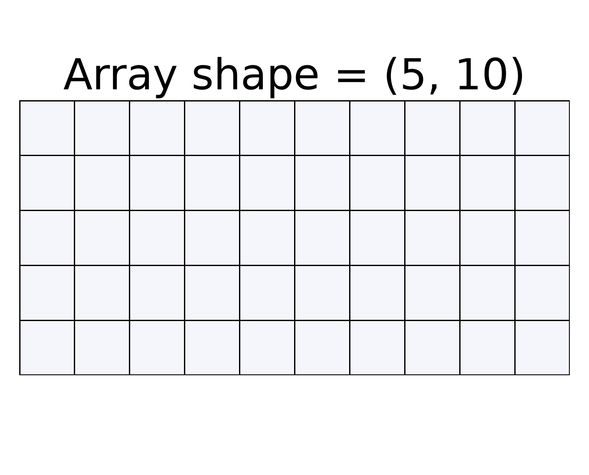
Why does data come in array form?
- Naturally lends itself to what the data represents (e.g. microscopy)
- Arrays can be indexed efficiently in memory
Data has a “size”
Computers store data as bits , arranged in bytes of 8 bits.
- Kilobyte (KB) = 1000 bytes
- Megabyte (MB) = 1000 kilobytes
- Gigabyte (GB) = 1000 megabytes
- Terabyte (TB) = 1000 gigabytes
Data has a “size” (sidenote)
Computers store data as bits , arranged in bytes of 8 bits. There are also binary system equivalents
- Kibibyte (KiB) = 1024 bytes
- Mebibyte (MiB) = 1024 kibibytes
- …
We treat KB and KiB as equivalent for our purposes.
Why do we care about arrays?
Lots of scientific data comes in (large) array form.
Electrophysiological probes
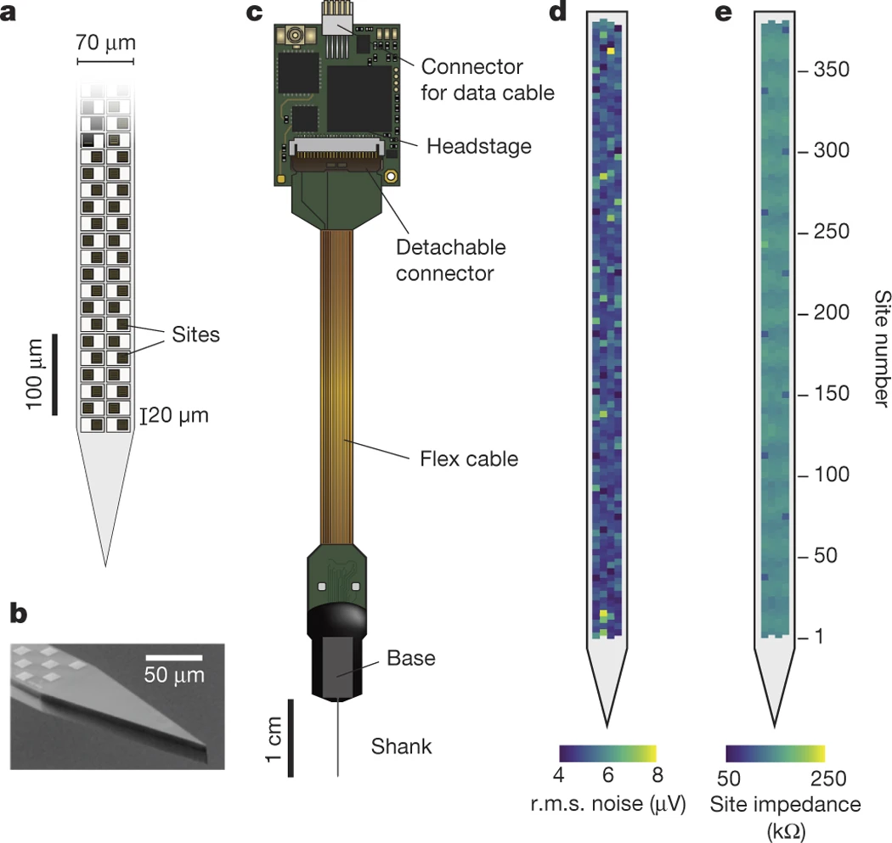
Electrophysiological probe recordings
Brain Wide Map
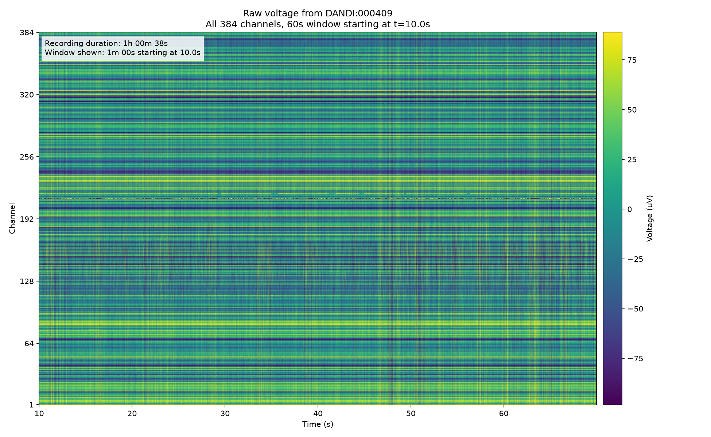
Brain Wide Map
Brain Wide Map
49.7 TB across 2048 files and 139 subjects
Week-long recordings
Week-long recordings
In a typical experiment (for example the ones described in the section Recording and quantification of social behaviours), we record from over 30 unique hardware devices and over 60 unique data streams, and when including electrophysiology data from two Neuropixels probes, the total acquisition throughput can reach up to 200 GB per hour.
Two-photon microscopy
Whole brain imaging
A whole marine worm
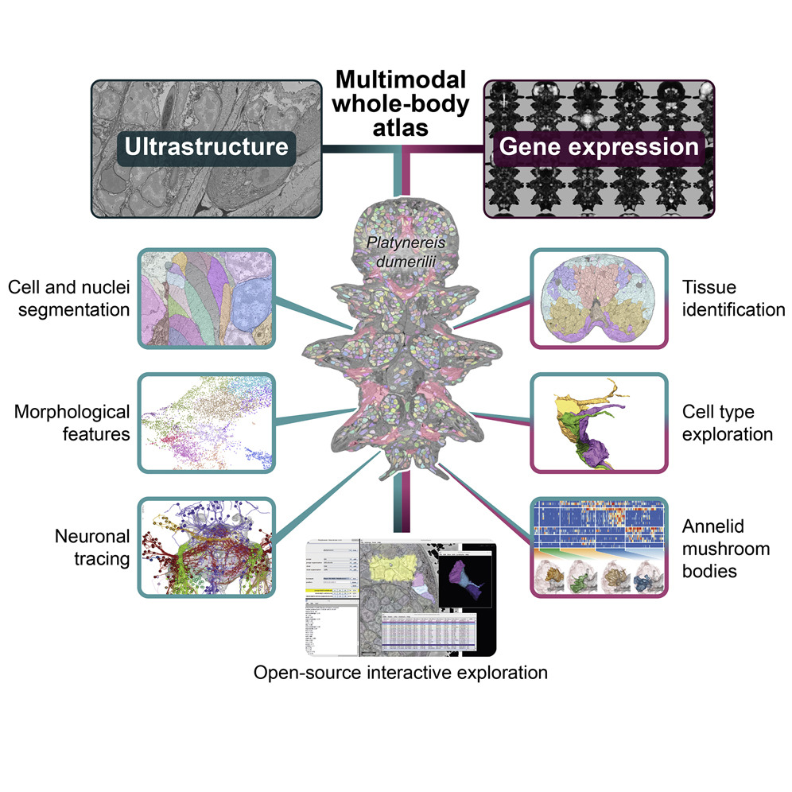
Volume electron microscopy
A whole marine worm
(~2TB)
Geography
https://charts.gc.ca/charts-cartes/bathymetry-index-bathymetrique-eng.html
Astronomy
Mentimeter
Mentimeter
Mentimeter
Starting small
Exploring array size and shape with numpy
numpy arrays
numpy is the default Python library to process array data.
Common data types
NumPy supports a very wide range of data types, but there are a few that are most common in scientific applications:
| NumPy datatype | Full name | Range of values |
|---|---|---|
bool |
Boolean (8-bit) | [False, True] |
uint8 |
Unsigned integer 8-bit | 0…255 |
uint16 |
Unsigned integer 16-bit | 0…65535 |
float32 |
Float 32-bit | \(-3.4 \times 10^{38}...+3.4 \times 10^{38}\) |
float64 |
Float 64-bit | \(-1.7 \times 10^{308}...+1.7 \times 10^{308}\) |
Exploring a numpy array
Exploring a numpy array
Exploring a numpy array
Extract its bytes.
Exploring the array size
Extract its bytes
60 bytes total
First five elements:
0000000000000010 0000000000011101 0000000000000100 0000000001010110 0000000001011110 ...numpy is great!
It works well for many applications and is very stable.
Using numpy keeps your code simple, more accessible, and easy-to-read.
So what’s the problem?
A mental model
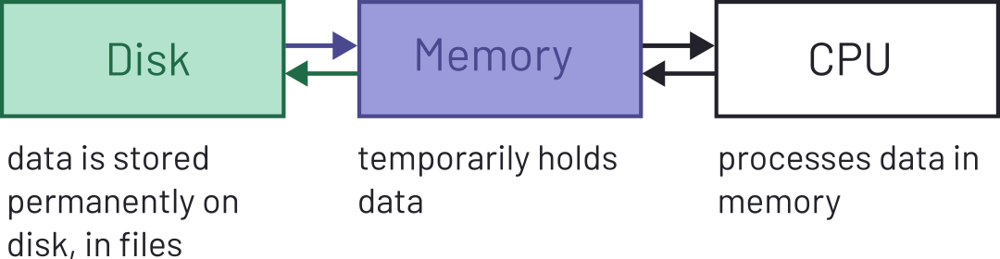
Data being processed on a computer.
A mental model
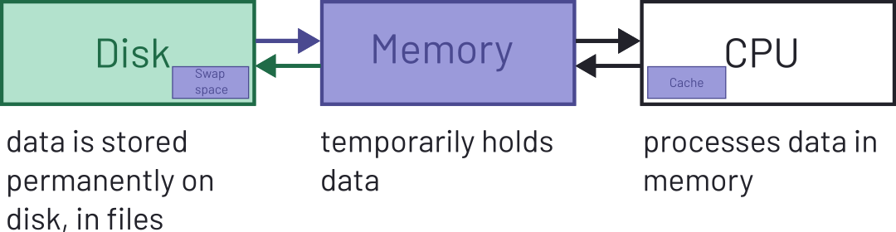
Data being processed on a computer.
A mental model
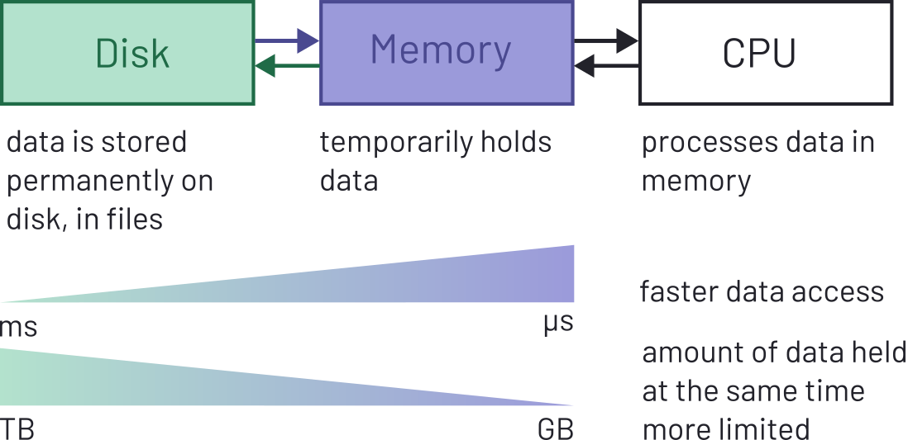
Data being processed on a computer.
A mental model
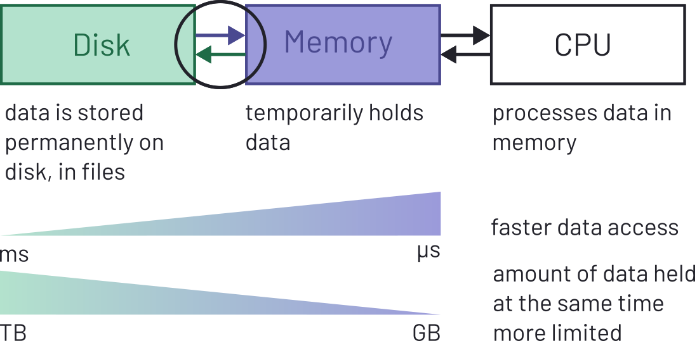
Data being processed on a computer.
Memory allocation
When we make a numpy array, the memory it needs is allocated eagerly (i.e. immediately).
This is usually fine, but…
Large Array Data
…vastly exceeds an average laptop’s memory (8-32 GB) in size.
Therefore, allocating memory eagerly is a bad idea!
A mental model
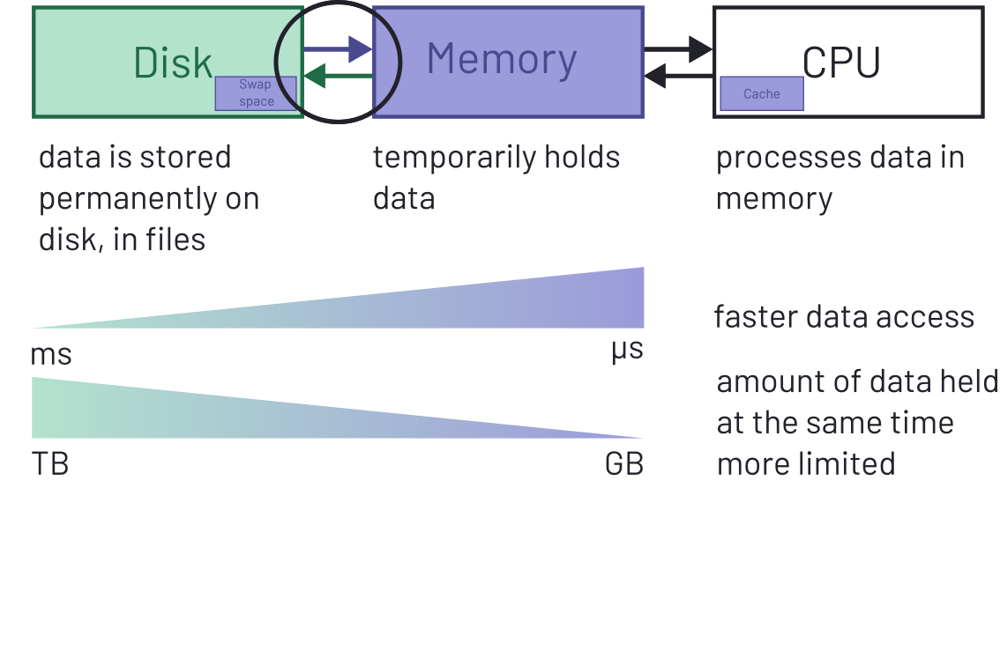
Data being processed on a computer.
Exercise 1 (Eager memory allocation)
notebooks/1_memory_cap.ipynb- Activate your conda environment
- Run jupyter
- Open
http://localhost:8888/lab? - Navigate to the downloaded notebook and work through it.
Exercise 1 (demo)
Coffee break?
A mental model
Eager memory allocation is a problem for large arrays.
We need more control
“Lazy” operations:
Hold off allocating memory/doing computations for as long as we can…
…and only operate on the minimum amount of in-memory data needed.
We get more control by being lazy :)
An example
Our goal is to plot a slice of a 3D brain image.
Eager strategy:
- Load the whole image into memory
- Access the slice
- Plot the slice
An example
Our goal is to plot a slice of a 3D brain image on disk.
Lazy strategy:
- Store the index of the slice in-memory
- Figure out where on disk to get the slice from
- Only when plotting, access the slice
numpy can do this
A memory map lets us treat a file on disk as if it were in memory.
The operating system loads parts of it from disk into memory only as they’re actually accessed.
numpy can do this
Limitations of numpy memory maps
- Data has to be on local disk (not cloud)
- No compression
- No parallelisation
How could we improve on this?
How could we improve on this?
We would benefit from increased flexibility like
- Allowing large arrays to be cut into smaller, customisable “chunks” that can live anywhere
- Allow control over when operations are executed
How could we improve on this?
dask has solved this problem for us.
The dask array
An array of numpy arrays
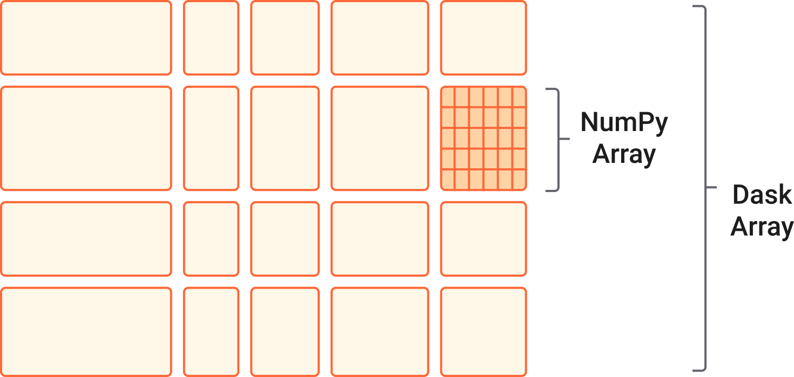
that also behaves like a lazy numpy array.
What does this mean?
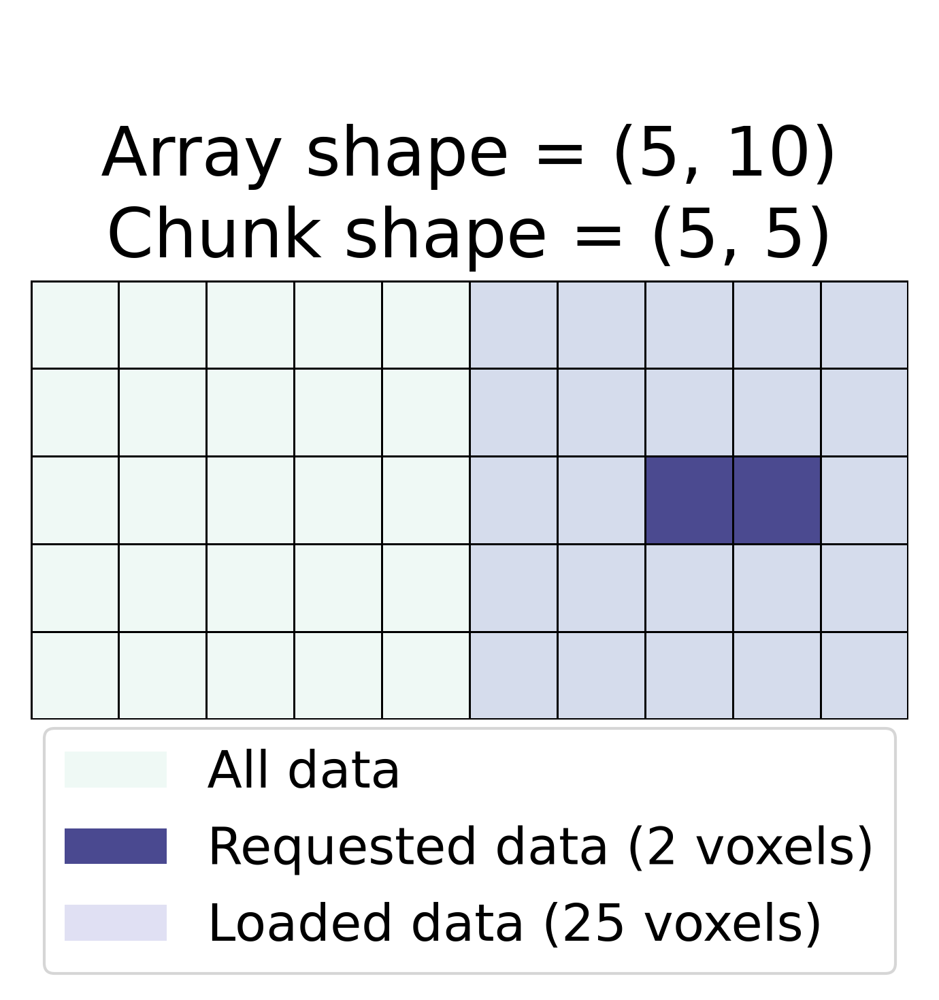
What does this mean?
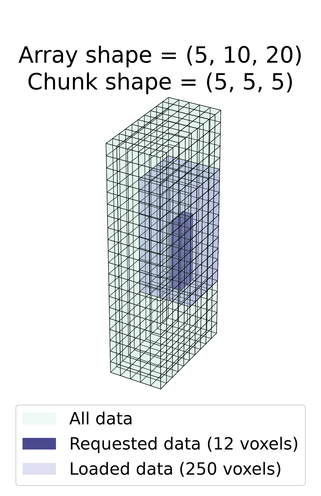
The dask array
An evolution of the numpy array
- Same interface (for most functionality)
- Allows “chunking” of the array into smaller chunks
- Gives control over when data is actually loaded into memory
dask keeps track of lazy operations in a “task graph”
The dask array
The dask array
dask.array<random, shape=(10000, 10000), dtype=float64, chunksize=(1000, 1000), chunktype=numpy.ndarray>Lazy evaluation means print(x) doesn’t load array data into memory.
The dask array
Lazy evaluation means print(x) and slicing still doesn’t load array data into memory.
The dask array
dask.array<getitem, shape=(100, 100), dtype=float64, chunksize=(100, 100), chunktype=numpy.ndarray>The dask array
.compute method gives us control over when to actually load into memory.
The dask array
[[0.61445674 0.41083439 0.28707008 ... 0.75208782 0.94290767 0.79885702]
[0.3354025 0.08746116 0.06400934 ... 0.3716306 0.06823481 0.9312636 ]
[0.27447981 0.43523149 0.28388671 ... 0.77478497 0.68932554 0.14470009]
...
[0.36347455 0.31431354 0.13395478 ... 0.25372613 0.49443843 0.83801591]
[0.92364984 0.33759064 0.30763563 ... 0.6186865 0.2783236 0.75495891]
[0.51216438 0.41198518 0.34655659 ... 0.95758743 0.92432426 0.45513867]].compute method gives us control over when to actually load into memory.
dask delayed
delayed function allows us to execute our own functions lazily.
dask delayed
Delayed('ndarray-30b53cef-401e-41b8-9ea7-486b02138992')
[ 9558 10533 10559 9801 9824 10359 9248 10044 9582 10261 8968 9568
9717 10613 10368 10779 9269 9932 9626 8513 9708 9774 9152 9215
9142 10544 9426 10413 9981 9811 9219 10744 10032 9580 9250 10708
9934 9805 9663 11150 9923 10306 10361 9939 10027 10104 10101 9307
11128 10503 10375 9419 9534 9479 9375 10801 10039 10293 10001 9298
9725 9772 9128 10830 9976 9765 8737 8693 9870 10244 10143 9984
9653 10576 9606 10905 9828 9803 9447 9844 10166 8634 9927 10273
10291 10203 10174 10987 8970 9272 9447 9479 9614 9846 9804 10304
7712 10504 10536 10380]delayed function allows us to execute our own functions lazily.
Exercise 2 (Joint)
Loading of large array slices with
numpy(eager, viatifffile.imread)numpy.memmap(lazy, viatifffile.memmap)dask
showcasing the increased flexibility of dask.
Exercise 2 (Joint)
If you want to run on your own data
notebooks/2_numpy_to_dask.ipynb- Activate your conda environment
- Run jupyter
- Open
http://localhost:8888/lab? - Navigate to the downloaded notebook and work through it, make it point to your own data
Reading and writing dask arrays
So far, we have only created dask arrays in-memory (lazily). But how do we store them on disk?
- Having chunks helps us here too.
- We can store each chunk in a separate file.
- We can store metadata in the same (super-)file.
How do we store them on disk?
zarr has solved this problem for us.
Zarr files
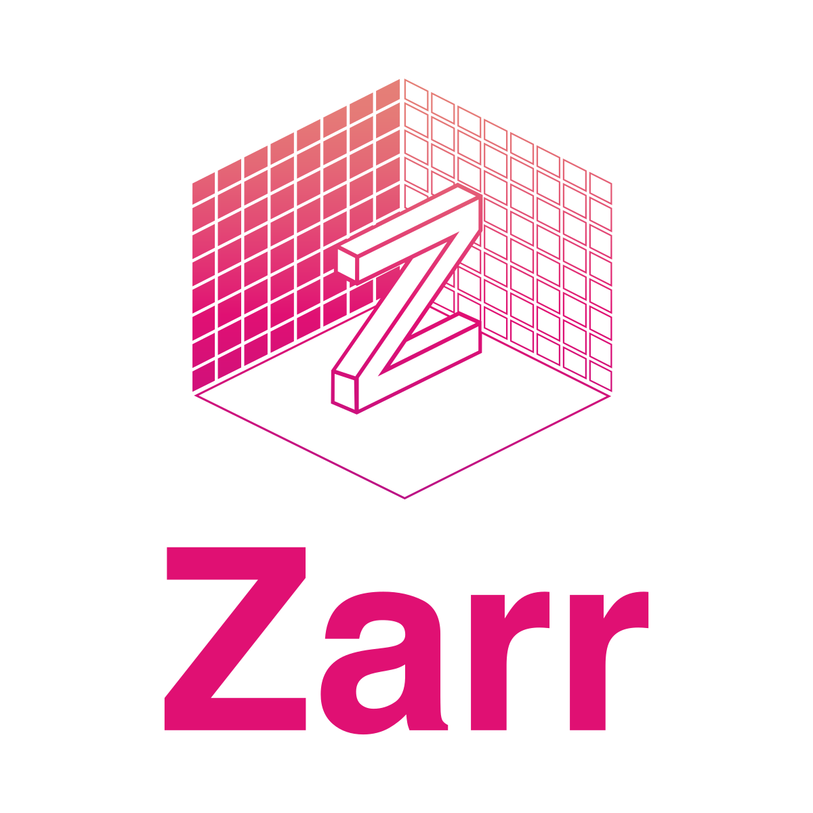
- open-source file format specification
- n-dimensional arrays
- split into chunks
- Each chunk is a separate file
Note: Zarr and zarr-python
Zarr is not the same as zarr-python.
- Zarr is a file format specification
zarr-pythonis a Python library to work with Zarr files- Confusingly, used like
Exercise 3
Exercise 3
Showcases
daskreading a file from a public cloud archivedaskprocessing the data and storing part of it tozarr
Exercise 3
notebooks/3_dask_remote_to_zarr_io.ipynb- Activate your conda environment
- Run jupyter
- Open
http://localhost:8888/lab? - Navigate to the downloaded notebook and work through it, make it point to your own data
Summary
numpyeager memory allocation is a bad idea for large arraysnumpy.memmaphelps but has limitations
Summary
daskis more flexible- Lazy by default
- Customise chunks
- Control function execution with
delayed - Works with remote data
zarr- Flexible file format for chunked arrays
- Each chunk = one file on disk
OME-Zarr introduction
Recap on Zarr
- open-source file format specification
- n-dimensional arrays
- split into chunks
- Each chunk is a separate file
- Enables parallel processing of massive datasets
Working with Zarr
One of the main libraries for interacting with Zarr in python is zarr-python.
Quick demo of using zarr-python to make arrays and groups:
notebooks/zarr_python_example.ipynb
What’s in a Zarr?
The zarr specification dictates how a Zarr file should be structured.
As we saw in the demo, the main components of a Zarr file are:
- groups (which you can think of as containers) and arrays (our actual numeric data)
- groups can contain any combination of groups and arrays, allowing a tree of datasets to be made
- each level of the tree (a group or array) contains a
zarr.jsonfile with basic metadata
Tree / hierarchy
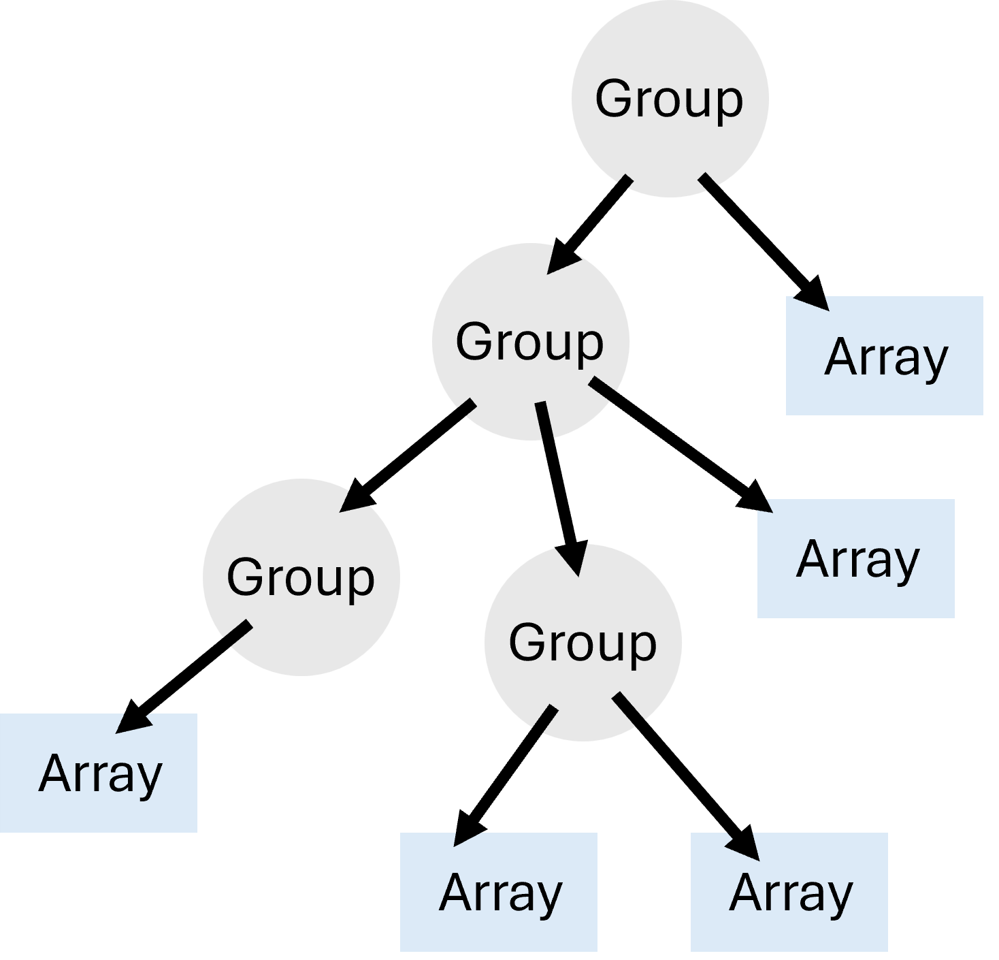
Zarr is general (pros)
One of Zarr’s great strengths is that it can be applied to any kind of array data across many fields.
Their website’s dataset section includes:
- climate model outputs
- sea surface temperature
- bio-imaging data
- …
Zarr is general (cons)
Equally, one of Zarr’s great weaknesses is that it is general!
When we use it for a specific kind of data (say biological images), there is no consistent place for related metadata to be stored.
For example:
- pixel size?
- units?
- meaning of dimensions? E.g. time / z / y / x / channels
This makes it harder to share datasets with others, and to process datasets that weren’t created by yourself.
OME-Zarr
Specific fields can get around this limitation by extending the Zarr specification.
- OME-Zarr = Zarr + bio-imaging related metadata
- It also introduces conventions on how to layout the Zarr files to handle common use cases:
- multi-resolution datasets (we’ll come back to this!)
- high-content screening
- storing label images alongside raw images
Working with OME-Zarr
Let’s take a look at some OME-Zarr metadata using ome-zarr-models.
OME-Zarr models is a python package specialised to validating and loading OME-Zarr metadata.
Quick demo of accessing metadata:
notebooks/ome-zarr-models_example.ipynb
Multi-scales
Part of the OME-Zarr specification adds multiscales metadata.
- It allows storing the same dataset at multiple resolutions
- May also hear this called a ‘pyramidal’ file format
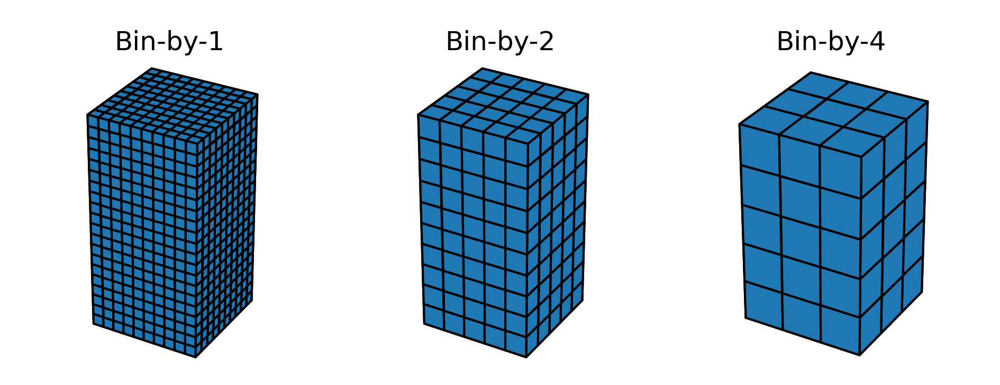
Why multi-scale?
Viewing a whole slice from a multi-terabyte dataset can still be hundreds of GB!
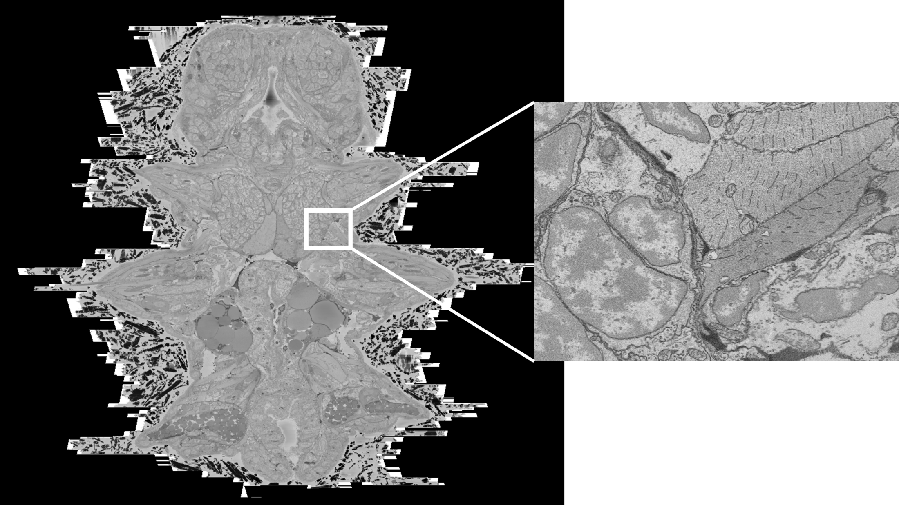
Image from Vergara et al. 2021 - Whole-body integration of gene expression and single-cell morphology
Specialised viewers
Specialised viewers dynamically load different resolution levels.
Web examples:
Local examples:
- Napari
- BigDataViewer (Fiji)
- …
Versioning
Spec versions can get complicated.
- The main zarr spec is currently v3
- The OME-Zarr spec is currently v0.5
- OME-Zarr changes more often than Zarr
News from OME-Zarr land
- follow the Announcements for the
ome-ngfftag on image.sc - Join a community call or office hours - community pages
- ngff docs
Ecosystem
The ecosystem of tools / packages around OME-Zarr is rapidly evolving.
Don’t be afraid to try different options, and see what works best for your data.
- The resources section has useful lists of tools, training materials etc for OME-Zarr
- Tools list
- Training materials
Try it out!
notebooks/creating_ome_zarr.ipynb: creating OME-Zarr step by stepnotebooks/converting_ome_zarr.ipynb: libraries for converting to OME-Zarrnotebooks/visualising_ome_zarr.ipynb: viewing OME-Zarr in napari
Parallelising array operations with dask
Parallelising array operations with dask
How should we coordinate array operations so Python can execute them at the same time?
- “In parallel”, “concurrently”
Concurrency
Two types of concurrency built into Python
- “Multi-threading”
- “Multi-processing”
Multi-threading
- Single Python process
- Threads share resources (e.g. memory)
Multi-threading example
import threading
counter = 0
lock = threading.Lock()
def increment(n):
global counter
for _ in range(n):
with lock: # make sure counter doesn't get updated simultaneously
counter += 1
threads = [threading.Thread(target=increment, args=(100_000,)) for _ in range(4)]
with ThreadPoolExecutor(max_workers=4) as pool:
futures = [pool.submit(increment, 100_000) for _ in range(4)]
for f in futures:
f.result()
print(counter)Multi-threading example
400000Multi-threading with Queue
import threading
import queue
q = queue.Queue()
def worker():
while True:
item = q.get()
print(f'Working on {item}')
print(f'Finished {item}')
q.task_done()
# Turn-on the worker thread.
threading.Thread(target=worker, daemon=True).start()
# Send thirty task requests to the worker.
for item in range(30):
q.put(item)
# Block until all tasks are done.
q.join()
print('All work completed')Multi-threading
- Single Python process
- Threads share resources (e.g. memory)
- Need for coordination of sharing memory may actually hurt performance
Multi-processing
- Main Python process spawns other processes
- No shared resources
- Each process has its own memory space
- Memory needs to be copied to the subprocess
- Overhead of launching extra processes
Multi-processing example
Multi-processing example
2222
[3, 7, 11, 15]
36Python concurrency
Python has concurrency built-in.
- Threads share memory
- Processes don’t
Use Queue for safe communication.
But writing concurrent code is complex and error-prone!
Dask provides some abstractions so you don’t have to worry about the intricacies.
Processing chunks
We can split operations on arrays into two types:
- The output element depends only on its input element (e.g threshold)
- The output element also depends on some neighbouring elements (e.g. Gaussian filter)
Processing chunks
We can split operations on arrays into two types:
- The output element depends only on its input element (e.g threshold)
- The output element also depends on some neighbouring elements (e.g. Gaussian filter)
Neighbouring elements may live in a different chunk!
Operating on dask/numpy arrays
Some extra dask/numpy syntax that will come in handy
where- Boolean comparison of arrays
nanmean
Operating on dask chunks
You can tell dask to apply a function lazily on each chunk
map_block(each chunk has all the info)map_overlap(you need info from neighbouring chunks)
Exercise 4
Exercise 4 will guide you through a realistic analysis of multiphoton imaging data that uses chunkwise dask operations
- Without overlap
- with overlap
Also showing how to choose between multi-threading and multi-processing.
Exercise 4
notebooks/4_parallel_processing_with_dask.ipynb- Activate your conda environment
- Run jupyter
- Open
http://localhost:8888/lab? - Navigate to the downloaded notebook and work through it.
More notes on dask
- Scales to multiple compute nodes
- Various extra libraries for GPU support
- Very general
More notes on performance
Favour robustness and simplicity over speed
- Performance may differ depending on data, hardware…
- Optimising performance is very tricky
Other Python array libraries
Array API
Goal: abstract the array backend
Array API
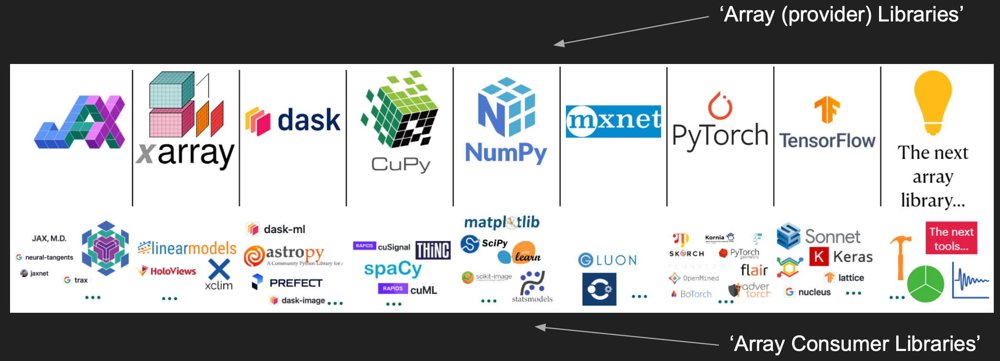
Array API
Goal: work with different array backends
Array API
- Work-in-progress
- Some difficulties in unifying array libraries
- Choose for flexibility over performance
Summary
- Python has threads and processes
- Use
map_blocksto apply chunkwise operations - Use
map_overlapif you need information from neighbouring chunks,- you will need to think about the
depthparameter
- you will need to think about the
- By default,
daskArrays operate concurrently using multi-threading - Favour robustness and simplicity over performance
- There are other open-source Python array libraries
Compression
Data has a “size”
Computers store data as bits.
60 bytes total
First five elements:
0000000000000010 0000000000011101 0000000000000100 0000000001010110 0000000001011110 ...Data compression
We can be smart about how to store this data with fewer bits.
60 bytes total
First five elements:
0000000000000010 0000000000011101 0000000000000100 0000000001010110 0000000001011110 ...Data compression
We could “encode” something like “assume the first 8 bits are always 0” and halve the file size.
60 bytes total
First five elements:
0000000000000010 0000000000011101 0000000000000100 0000000001010110 0000000001011110 ...Lossless and lossy compression
Some compression algorithms preserve all the information.
Others are lossy, e.g. “.jpg” files
What is a codec?
Codec stands for encoder/decoder.
If defines how data is written to/read from disk.
Different codecs will work better/worse for different data.
Compression trade-offs
Generally, we expect a smaller size on disk to result in slower read/write.
But compression algorithms can be clever about this too.
Case study
Two audio codecs work well on electrophysiology data.
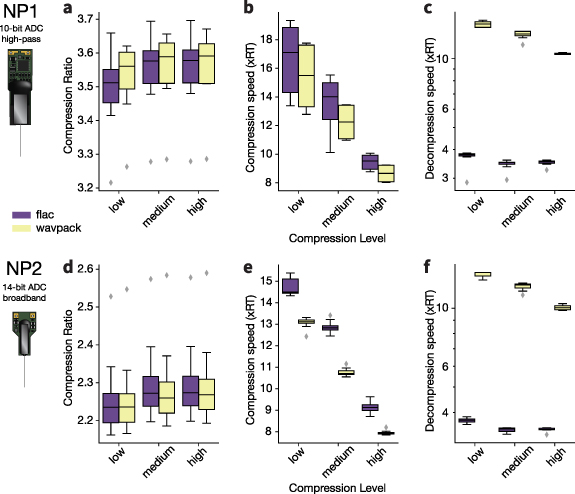
Better compression ratio, slower decompression speed
Buccino et al. (2023)
Using Codecs in zarr
Zarr provides a number of Codecs that you can specify when writing files.
Exercise 5
Compares write speeds and disk size for different compression levels.
Exercise 5
notebooks/5_remote_file_compression.ipynb- Activate your conda environment
- Run jupyter
- Open
http://localhost:8888/lab? - Navigate to the downloaded notebook and work through it, make it point to your own data
Zarr benchmarks
Recap on Zarr
- open-source file format specification
- n-dimensional arrays
- split into chunks
- Each chunk is a separate file
- Enables parallel processing of massive datasets
- OME-Zarr extends this with bioimaging-related metadata + multiscales
Zarr settings
There are lots of settings that can be adjusted when writing Zarr and OME-Zarr images:
- Chunk size
- Compressor
- Compression level
- Other compressor options like ‘shuffle’
- …
How to choose?
These settings affect:
Write time
Read time
Size on disk
Number of files
Memory usage for different operations
Choosing settings is a trade-off between these different factors. You have to decide what you want to prioritise for your data.
HEFTIE Project
Benchmarks were made as part of the HEFTIE project:
- David Stansby, Ruaridh Gollifer and Kimberly Meechan (UCL ARC)
- Also made the online OME-Zarr book that we used some exercises from yesterday.
Benchmarks
3 images: heart (335 MB), dense segmentation, sparse segmentation
All sized 806 x 629 x 629
All 16-bit unsigned integer
Images
Heart: HiP-CT scan of a heart from the Human Organ Atlas
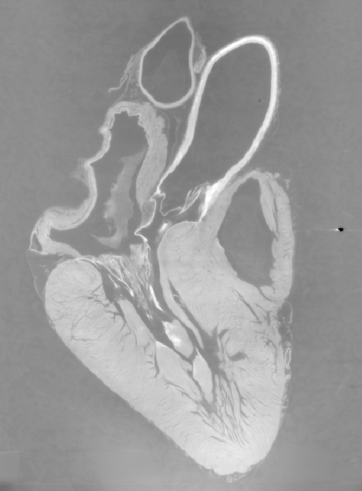
Images
Dense: segmented neurons from electron microscopy
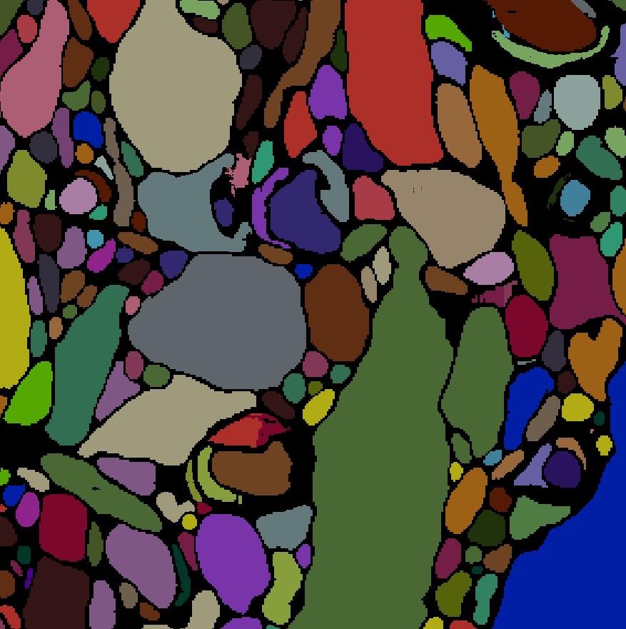
Images
Sparse: A few select segmented neurons from electron microscopy
Benchmarks
pytest-benchmark- Vary different settings and record:
- Time to write the whole array (lower is better)
- Time to read the whole array (lower is better)
- Compression ratio: data size in memory / data size on disk (higher is better)
- Each run 5 times and mean values used
Write time
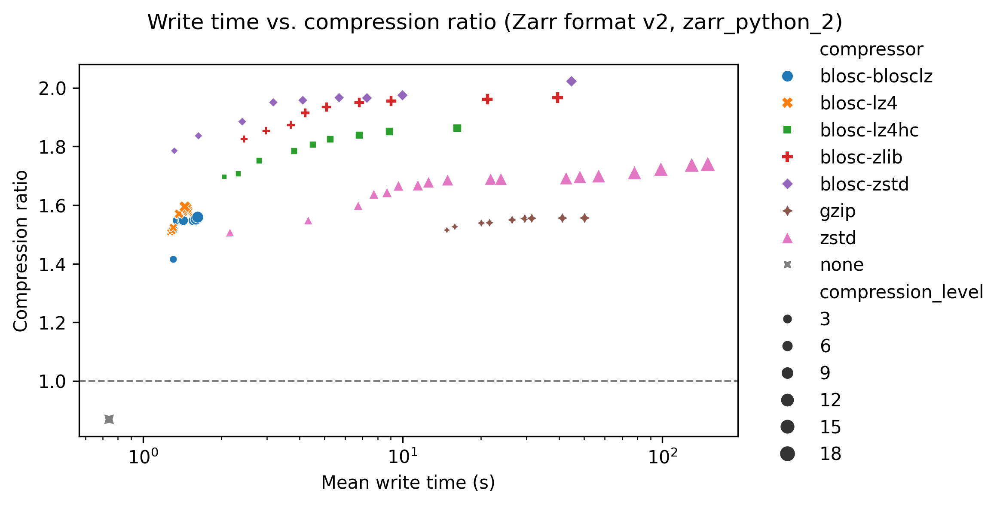
Higher compression level = higher compression ratio = longer write time
Read time
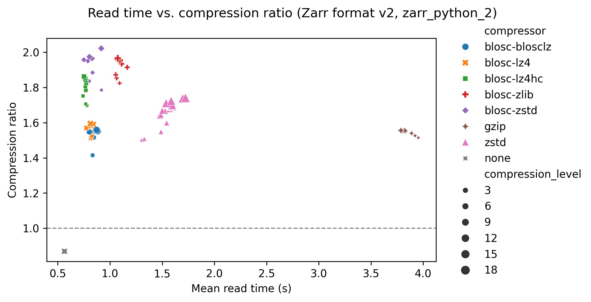
Higher compression level doesn’t usually result in longer read times. For many compressors this is a feature of their design, with a large one-off cost of compressing the data, but no slow down when reading it
Chunk size
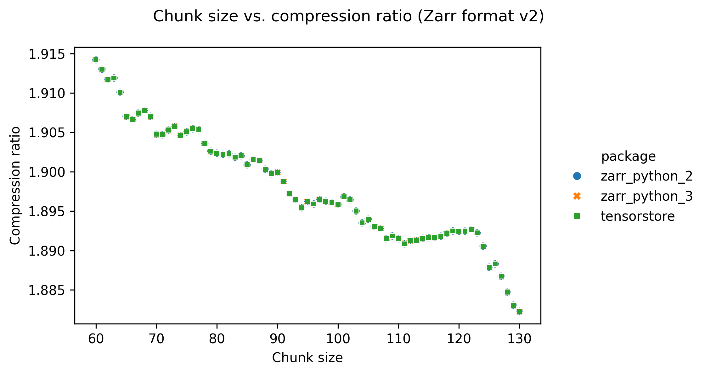
Larger chunks = lower compression ratio (but only slightly)
Chunk size
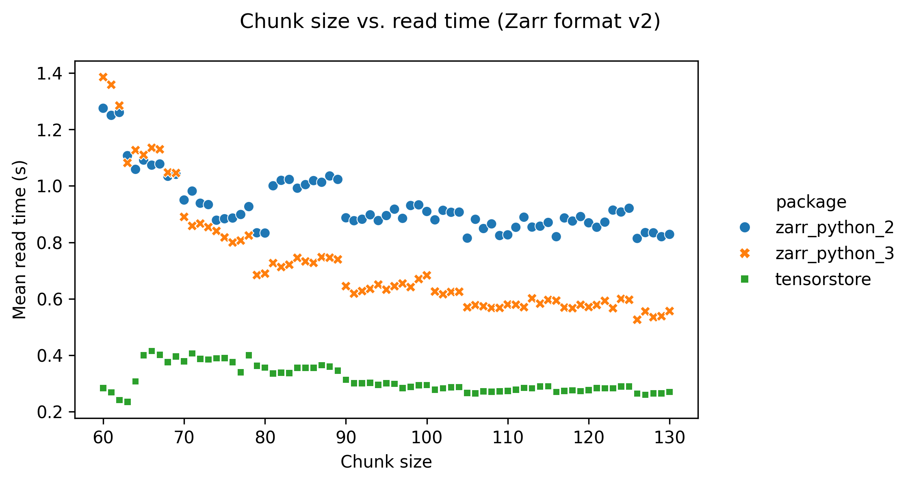
Larger chunks = faster write and read times (mainly due to fewer total files)
Image type
Heart image Dense segmentation
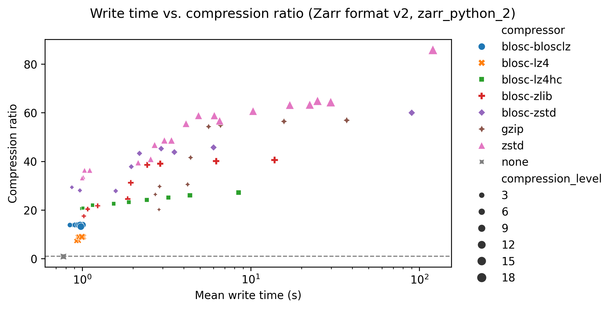
Sparse segmentation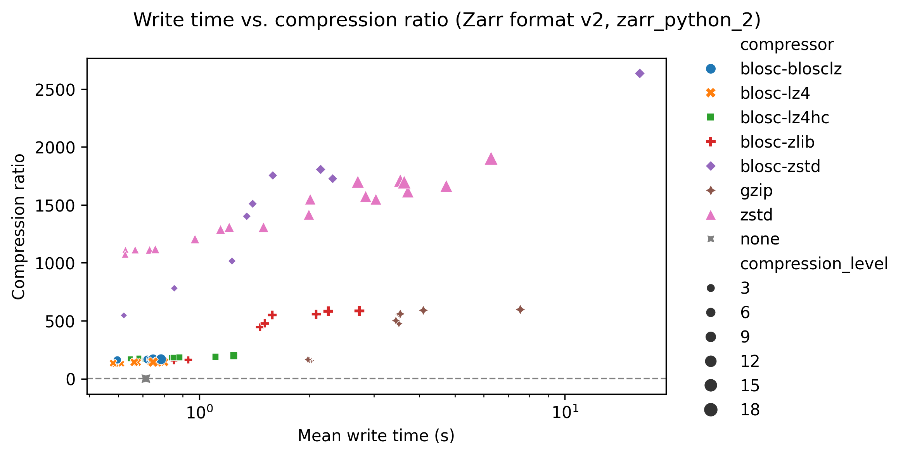
Segmentations compress much more!
Software library
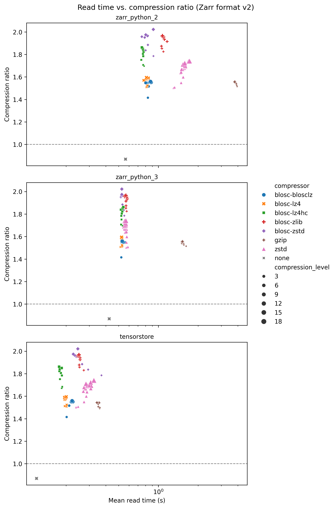
Which software library you use affects read / write times. Tensorstore had the best performance.
Benchmarking Zarr conclusions
Some general recommendations:
Use
tensorstorelibrary for fastest read/writeblosc-zstdis a good default compressorUse a high compression level to get the smallest file size (usually means longer write times, but not much effect on read time)
Smaller chunks = smaller overall file size + less memory usage
Larger chunks = faster read/write times + fewer files
It’s a balance! People often use 64x64x64 or 128x128x128
This is different for different data! Worth testing some small samples of your own data with different settings
Sharding
One of the settings we didn’t benchmark was ‘sharding’:
- Shards contain multiple chunks
- Each shard is a file on disk (rather than each individual chunk)
- A chunk is the smallest unit you can read; a shard is the smallest unit you can write
- Main purpose is to reduces number of files
- Some file systems may have performance issues storing and accessing a large number of small files.
Benchmarking sharding
Let’s experiment with sharding options:
notebooks/sharding.ipynb
Large Array Data
Case studies from the Neuroinformatics Unit
Photon-mosaic
Two-photon microscopy
Live multi-photon imaging data
- Very long arrays in time
- Can be 2D or 3D in space
- Can have several channels
Context
- Some existing open-source software packages (e.g.
suite2p,CaImAn) - Not particularly interoperable
- Experiments becoming more complex:
- Match videos from several days
- More 3D data
- From deeper in the brain
We need flexibility to customise!

Modularity
Vision: Mix and match like
A project in its very early stages
Modularity
Demo time!
Mental models
- Shared representation of arrays and processing steps
- Inspired by
spikeinterface
Array handling strategy
- Only chunk along time
- Rely on ROIExtractors to read (lazily)
- We support native writing to Zarr and binary.
photon-mosaic-pipeline for batch-processing on HPC
- Built on top of
snakemake. - Configure with a single file.
Community
- Collaboration with Allen Institute for Neural Dynamics and International Brain Laboratory
- Community-driven: open meetings every two weeks!
Alessandro Felder
Laura Porta
Alessio Buccino
Arielle Leon
Johannes Friedrich
Sean McCulloch
Georg Raiser
Photon-mosaic
Photon-mosaic
Collaboration day ideas? Open an issue.
Cellfinder
Cellfinder
- part of the BrainGlobe ecosystem
- real-world example of many concepts demonstrated here
Cellfinder
Finding centre coordinates of cells (bright blobs) in large arrays.
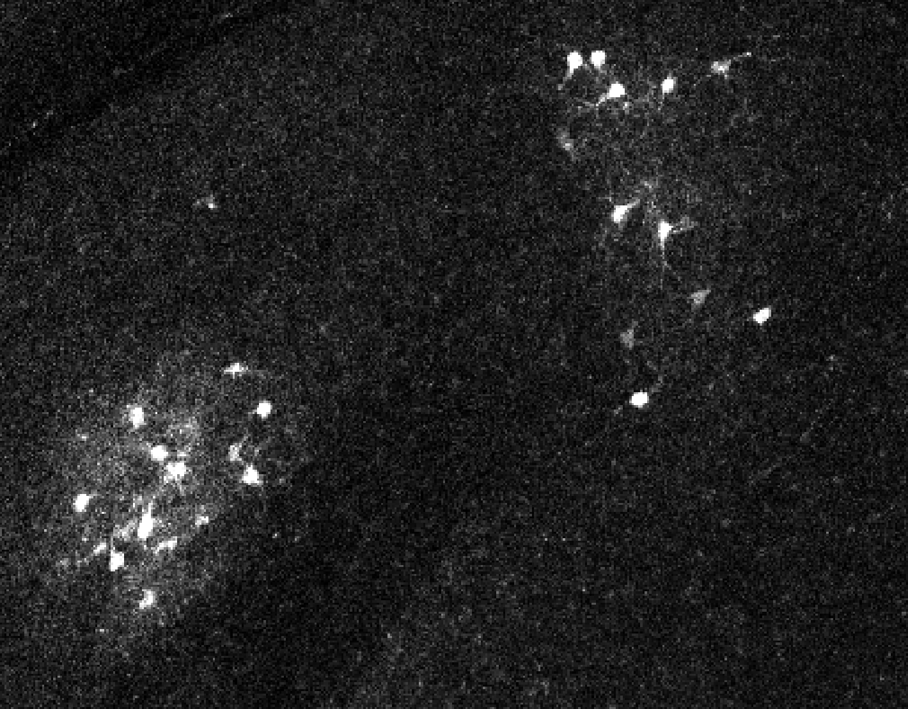
Serial two-photon tomography
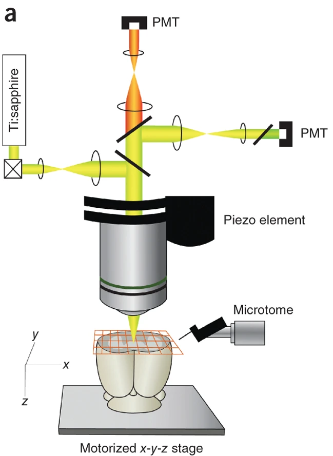
Osten and Margrie (2013)
cellfinder input data
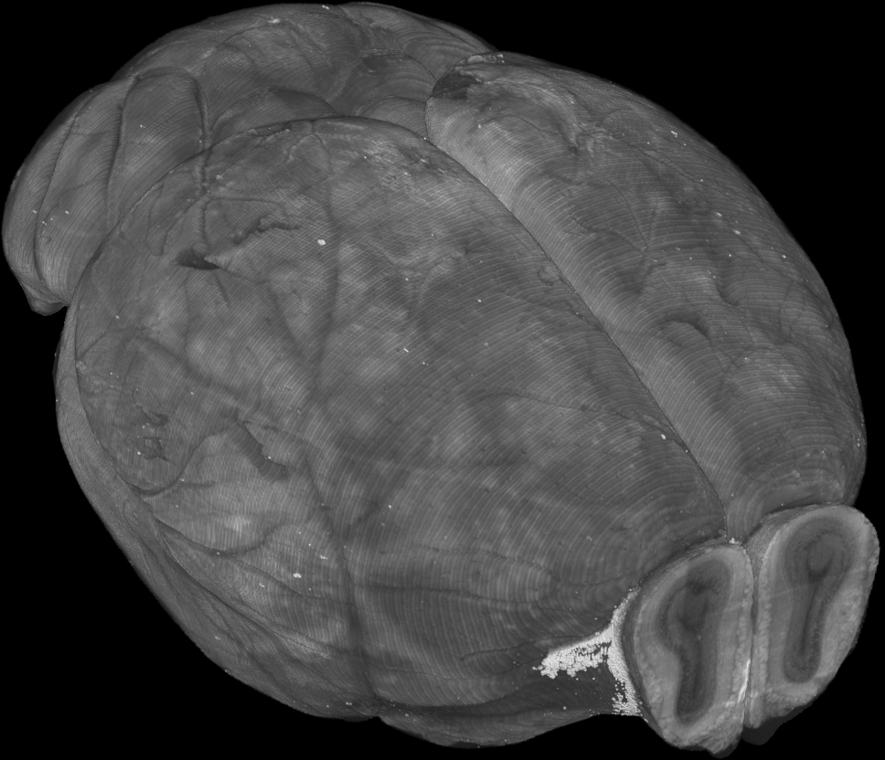
cellfinder input data
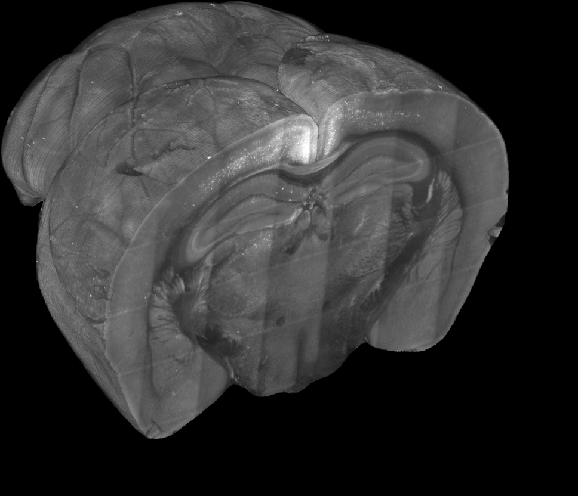
Cellfinder
Finding centre coordinates of cells (bright blobs) in large arrays.
Arrays are ~100GB / channel, stored as 2D tiffs (40 MB each)
How to find cells
A series of 2D and 3D filtering and thresholding operations
Store centres of bright blobs (“cell candidates”)
Use a classification algorithm
- Works on small cube around candidate centre
Strategy
- Sweep along first array axis
- Keep a “slab” in memory
- Filter and threshold
- Store centres of blobs separately (small)
- Sweep again
- Extract cubes and add classification metadata
First sweep (filter+threshold)
First sweep (filter+threshold)

- 3D operations in main thread
- Communicate both ways with sub-threads/processes
- Using two queues
- Custom exception handling
Second sweep (classify)
Second sweep (classify)

- cache whole slab
- for reuse across cell centres
Code examples
- Taken without edit directly from
cellfindercodebase - See if you understand them!
Lazy loading
lazy_imread = delayed(tifffile.imread) # lazy reader
def read_with_dask(path: str | Path) -> da.Array:
...
shape, dtype = get_tiff_meta(filenames[0])
lazy_arrays = [
lazy_imread(fn, is_ome=False)
for fn in get_sorted_file_paths(filenames)
]
dask_arrays = [
da.from_delayed(delayed_reader, shape=shape, dtype=dtype)
for delayed_reader in lazy_arrays
]
stack = da.stack(dask_arrays, axis=0)
return stack2D filtering in a sub-process
@inference_wrapper
def _plane_filter(
process: ProcessWithException,
tile_processor: TileProcessor,
n_threads: int,
buffers: List[Tuple[torch.Tensor, torch.Tensor]],
):
...
while True:
msg = process.get_msg_from_mainthread()
if msg == EOFSignal:
return
# with torch multiprocessing, tensors are shared in memory - so
# just update in place
token, i = msg
tensor, masks = buffers[token]
plane, mask = tile_processor.get_tile_mask(tensor[i : i + 1, :, :])
tensor[i : i + 1, :, :] = plane
masks[i : i + 1, :, :] = mask
# tell the main thread we processed all the planes for this tensor
process.send_msg_to_mainthread(None)Distributing data across subprocesses
def start_dataset_thread(self, num_workers: int) -> None:
# include queue for host thread
ctx = mp.get_context("spawn")
# we use maxsize=0 to prevent potential locking issues. But, we never
# actually request more than one data batch at a time over a queue
queues = [ctx.Queue(maxsize=0) for _ in range(num_workers + 1)]
self._worker_queues = queues
self._dataset_thread = ThreadWithExceptionMPSafe(
target=_read_data_send_cuboids,
args=(self.src_image_data, queues),
pass_self=True,
)
self._dataset_thread.start()Cellfinder summary
daskfor lazy loadingpytorchfor processing- suited to ML
- suited to GPU
- Coordinate via Python concurrency
Cellfinder efficiently processes large arrays.
Cellfinder summary
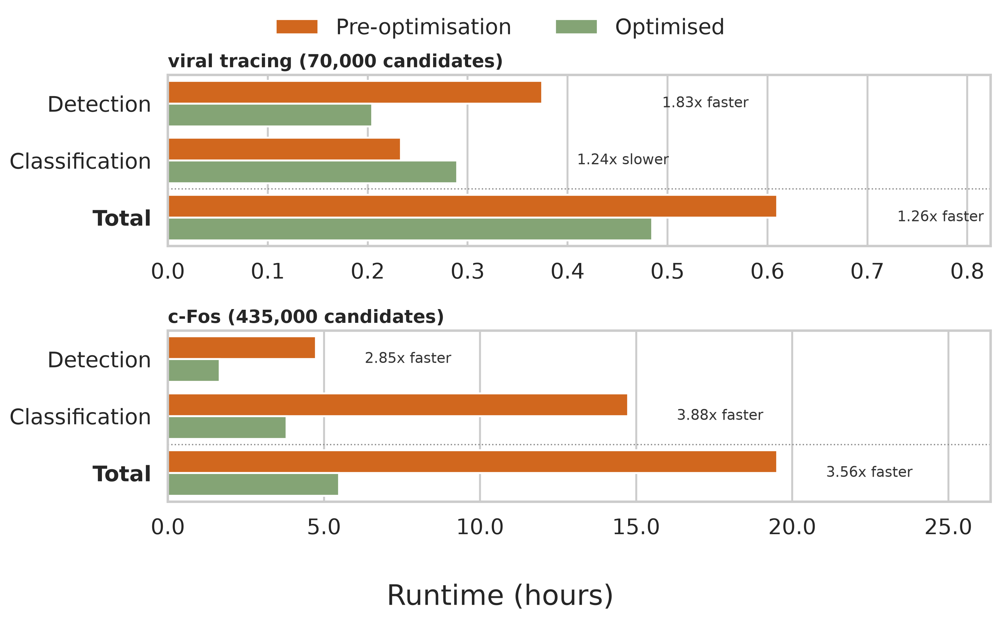
Cellfinder efficiently processes large arrays.
Cellfinder
Collaboration day ideas? Open an issue.
BrainGlobe Atlas API
🚧
Overall summary
Overall objectives
- Understand computational challenges related to large array data and key strategies to address them
- Gain hands-on Python experience and increase confidence in handling large array data
- Appreciate the diversity of the open-source Python ecosystem for large array data and how you are part of it
Understand computational challenges and how to address them
Large arrays do not fit into memory
We can deal with this through
- Chunking
- Lazy evaluation
- Parallelising across chunks
- Compressing chunks on disk
Handling large array data with Python
zarr-pythonanddaskare generalist libraries for processing large arrays (in parallel, with compression, anywhere).- Use
zarrfiles, ideally following a community standard (e.g. OME-Zarr).
The open-source ecosystem
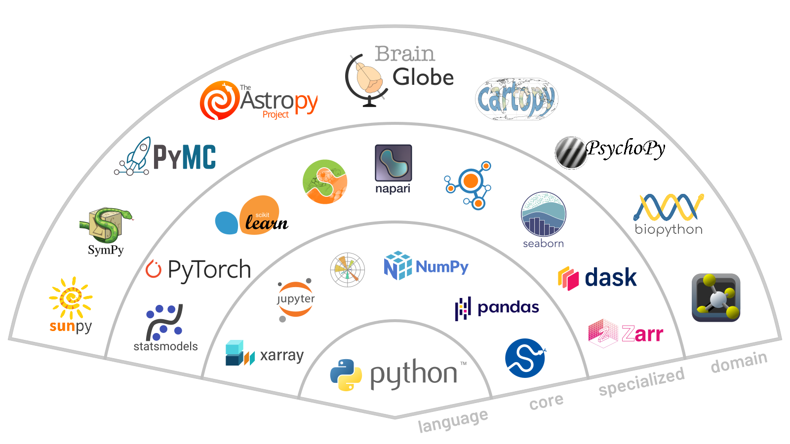
Niko Sirmpilatze
The open-source ecosystem
- There are many array libraries and related open-source projects out there.
- They also depend on layers of generalist open-source libraries.
- Each have their niche.
- Including in (neuro)science.
- By using them, you are part of it!
- Hopefully, interact more during collaboration days!
Thank you!
References
Aeon. 2026. Neuropixels Recording Guide. https://aeon.swc.ucl.ac.uk/getting_started/npx_recording/#id1.
Buccino, Alessio P, Olivier Winter, David Bryant, David Feng, Karel Svoboda, and Joshua H Siegle. 2023. “Compression Strategies for Large-Scale Electrophysiology Data.” Journal of Neural Engineering 20 (5): 056009. https://doi.org/10.1088/1741-2552/acf5a4.
HP Tech Takes. n.d. How Much RAM Do I Need? A Capacity Guide. HP. Accessed July 14, 2026. https://www.hp.com/us-en/shop/tech-takes/how-much-ram-do-i-need-every-use.
International Brain Laboratory. 2026. IBL - Brain Wide Map. https://doi.org/10.48324/dandi.000409/0.260309.1324.
Juavinett, Ashley L., George Bekheet, and Anne K. Churchland. 2019. “Chronically Implanted Neuropixels Probes Enable High-Yield Recordings in Freely Moving Mice.” eLife 8: e47188. https://doi.org/10.7554/eLife.47188.
Jun, James J., Nicholas A. Steinmetz, Joshua H. Siegle, et al. 2017. “Fully Integrated Silicon Probes for High-Density Recording of Neural Activity.” Nature 551 (7679): 232–36. https://doi.org/10.1038/nature24636.
Osten, Pavel, and Troy W. Margrie. 2013. “Mapping Brain Circuitry with a Light Microscope.” Nature Methods 10 (6): 515–23. https://doi.org/10.1038/nmeth.2477.
Sirmpilatze, Nikoloz, Alessandro Felder, Dinora Abdulazhanova, et al. 2025. Mapping the Magnetoreceptive Brain: A 3D Digital Atlas of the Migratory Bird Eurasian Blackcap ( Sylvia Atricapilla ). https://doi.org/10.1101/2025.03.04.641293.
Stansby, David, Kimberly Meechan, and Ruaridh Gollifer. 2026. An Introduction to OME-Zarr for Big Bioimaging Data. https://ome-zarr-book.readthedocs.io/.
Vergara, Hernando M., Constantin Pape, Kimberly I. Meechan, et al. 2021. “Whole-Body Integration of Gene Expression and Single-Cell Morphology.” Cell 184 (18): 4819–4837.e22. https://doi.org/10.1016/j.cell.2021.07.017.

Sainsbury Wellcome Centre | OSSS | 17-21 August 2026